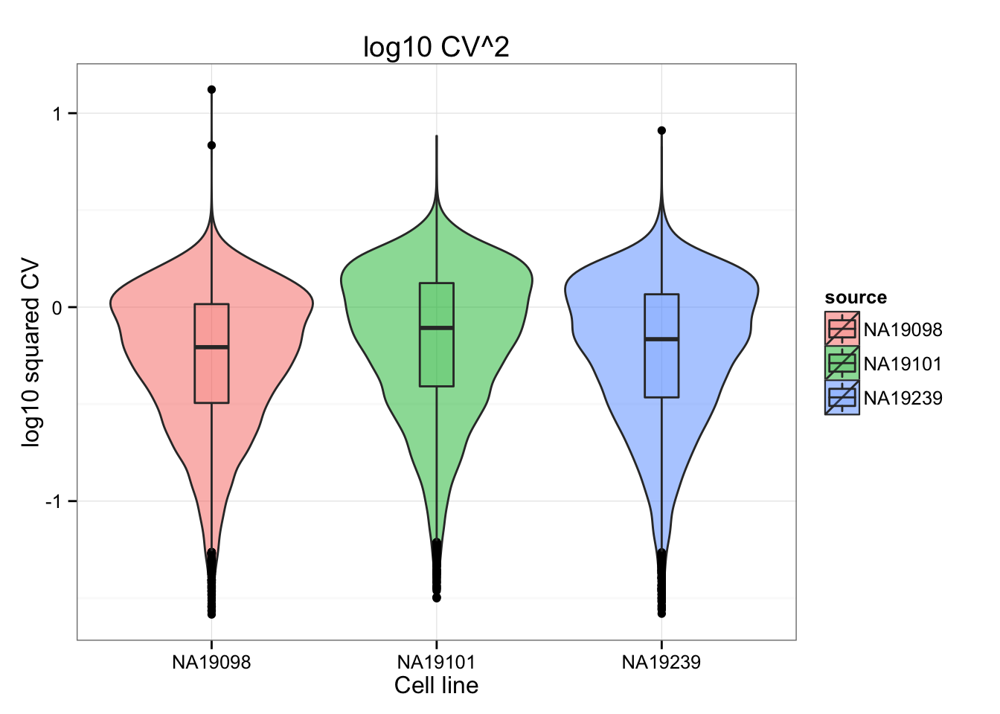
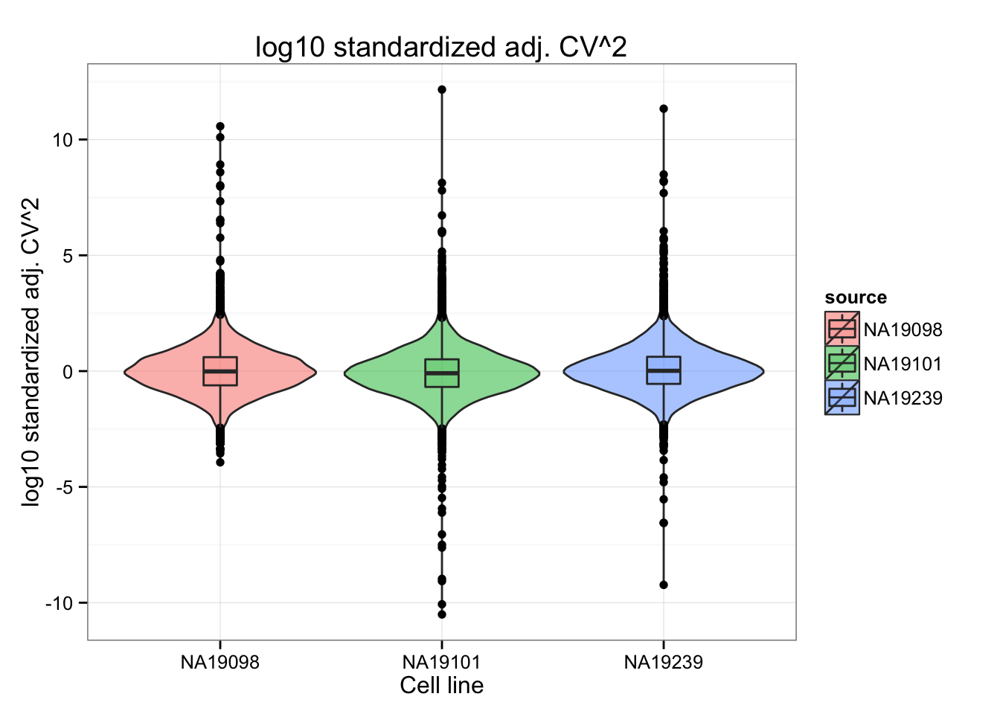
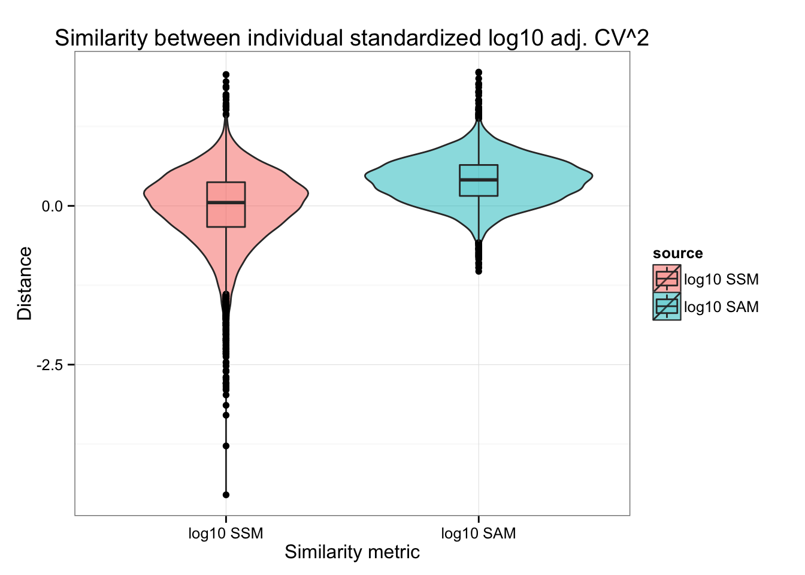
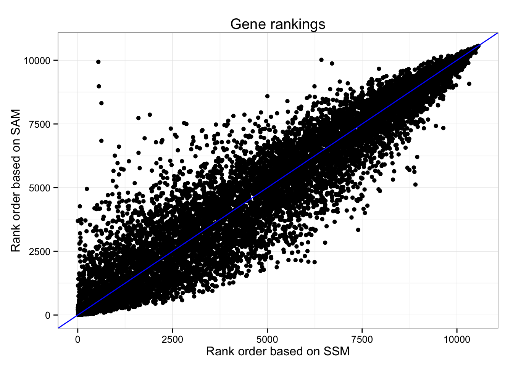

Quantify similarity between CVs
Joyce Hsiao
2015-10-31
Last updated: 2015-12-11
Code version: 884b335605607bd2cf5c9a1ada1e345466388866
Objective
We computed similarity metrics to quantify similarity between individuals in coefficients of variation (after accounting for mean dependenc): 1) Sum-of-Squared-Deviation-from-the-Meidan (SSM), and 2) Sum-of-Absolute-Deviation-from-the-Median (SAM). We ordered genes by these metrics and described genes with high and low similarity between individual adjusted-CV.
Set up
library("data.table")
library("dplyr")
library("limma")
library("edgeR")
library("ggplot2")
library("grid")
library("Humanzee")
theme_set(theme_bw(base_size = 12))
source("functions.R")Prepare data
Input annotation of only QC-filtered single cells. Remove NA19098.r2
anno_filter <- read.table("../data/annotation-filter.txt",
header = TRUE,
stringsAsFactors = FALSE)
dim(anno_filter)[1] 568 5Import endogeneous gene molecule counts that are QC-filtered, CPM-normalized, ERCC-normalized, and also processed to remove unwanted variation from batch effet. ERCC genes are removed from this file.
molecules_ENSG <- read.table("../data/molecules-final.txt",
header = TRUE, stringsAsFactors = FALSE)
stopifnot(NCOL(molecules_ENSG) == NROW(anno_filter))Import gene symbols
gene_info <- read.table("../data/gene-info.txt", sep = "\t",
header = TRUE, stringsAsFactors = FALSE)
str(gene_info)'data.frame': 6152 obs. of 5 variables:
$ ensembl_gene_id : chr "ENSG00000000003" "ENSG00000000005" "ENSG00000000419" "ENSG00000000457" ...
$ chromosome_name : chr "X" "X" "20" "1" ...
$ external_gene_name: chr "TSPAN6" "TNMD" "DPM1" "SCYL3" ...
$ transcript_count : int 3 2 7 5 10 4 12 2 13 8 ...
$ description : chr "tetraspanin 6 [Source:HGNC Symbol;Acc:11858]" "tenomodulin [Source:HGNC Symbol;Acc:17757]" "dolichyl-phosphate mannosyltransferase polypeptide 1, catalytic subunit [Source:HGNC Symbol;Acc:3005]" "SCY1-like 3 (S. cerevisiae) [Source:HGNC Symbol;Acc:19285]" ...Compute normalized CV
We compute squared CV across cells for each individual and then for each individual CV profile, account for mean dependency by computing distance with respect to the data-wide coefficient variation on the log10 scale.
ENSG_cv <- Humanzee::compute_cv(log2counts = molecules_ENSG,
grouping_vector = anno_filter$individual)
ENSG_cv_adj <- Humanzee::normalize_cv(group_cv = ENSG_cv,
log2counts = molecules_ENSG,
anno = anno_filter)Compute summary measure of deviation
- Standardize the each CV vectors
Individual CV vectors are standarized for individual CV mean and coefficients of variation across genes.
df_cv <- data.frame(NA19098 = ENSG_cv_adj[[1]]$log10cv2_adj,
NA19101 = ENSG_cv_adj[[2]]$log10cv2_adj,
NA19239 = ENSG_cv_adj[[3]]$log10cv2_adj)
library(matrixStats)
df_norm <- sweep(df_cv, MARGIN = 2, STATS = colMeans(as.matrix(df_cv)), FUN = "-")
df_norm <- sweep(df_norm, MARGIN = 2, STATS = sqrt(colVars(as.matrix(df_cv))), FUN = "/")
colnames(df_norm) <- names(ENSG_cv_adj)
#save(df_norm, file="./rda/cv-adjusted-comparison/adj-cv.rda")- Adj-CVs before/after standardization.
CVs are similar between individuals.
ggplot(data.frame(cv = c(t(rbind( ENSG_cv_adj[[1]]$cv,
ENSG_cv_adj[[2]]$cv,
ENSG_cv_adj[[3]]$cv) )),
source = factor(rep(colnames(df_cv), each = dim(df_cv)[1]) )),
aes(x = source, y = log10(cv^2), fill = source) ) +
geom_violin(alpha = .5) + geom_boxplot(alpha = .2, width = .2) +
xlab ("Cell line") + ylab("log10 squared CV") +
ggtitle("log10 CV^2")
The distributions of the adjusted squared CVs are not the same in their medians. This may cause an unfair comparison of the adj. CV^2 scores between individuals.
ggplot(data.frame(adj_cv = c(t(rbind( ENSG_cv_adj[[1]]$log10cv2_adj,
ENSG_cv_adj[[2]]$log10cv2_adj,
ENSG_cv_adj[[3]]$log10cv2_adj) )),
source = factor(rep(colnames(df_cv), each = dim(df_cv)[1]) )),
aes(x = source, y = adj_cv, fill = source) ) +
geom_violin(alpha = .5) + geom_boxplot(alpha = .2, width = .2) +
xlab ("Cell line") + ylab("log10 adjusted coefficient of variation") +
ggtitle("log10 adjusted CV")
We normlized the log10 adj. CV^2 by standardizing indivdual CVs over the mean and standard deviation across genes. Note the change in CV distribution from log10 adj CV^2 to normalized log10 adj CV^2. After accounting for differences in variability of the log10 adj. CV62, we observed that NA19098 spans an obviously smaller range of normalized adj CV^2 values than the other two cell lines, probably a consequence of the small number of cells in NA19098 (n = 141) compared to the others (NA19101: 201 cells; NA19239: 225 cells).
ggplot(data.frame(norm_cv = c(t( df_norm )),
source = factor(rep(colnames(df_cv), each = dim(df_cv)[1]) )),
aes(x = source, y = norm_cv, fill = source) ) +
geom_violin(alpha = .5) + geom_boxplot(alpha = .2, width = .2) +
xlab ("Cell line") + ylab("log10 standardized adj. CV^2") +
ggtitle("log10 standardized adj. CV^2")
- Compute metrics for quantifying similarity between the three individual coefficients of variation.
library(matrixStats)
df_norm <- as.data.frame(df_norm)
df_norm$squared_dev <- rowSums( ( df_norm - rowMedians(as.matrix(df_norm)) )^2 )
df_norm$abs_dev <- rowSums(abs( df_norm - rowMedians(as.matrix(df_norm)) ))Compare the two metrics
Box plots
ggplot(data.frame(dist = c(unlist(df_norm$squared_dev),
unlist(df_norm$abs_dev)),
source = factor(rep(c(1:2), each = dim(df_norm)[1]),
labels = c("log10 SSM", "log10 SAM"))),
aes(x = source, y = log10(dist), fill = source)) +
geom_violin(alpha = .5) + geom_boxplot(alpha = .2, width = .2) +
xlab("Similarity metric") + ylab("Distance") +
ggtitle("Similarity between individual standardized log10 adj. CV^2")
Density plots
library(broman)
crayon <- brocolors("crayon")
library(scales)
dens <- list( density(log10(df_norm$squared_dev)),
density(log10(df_norm$abs_dev)) )
names(dens) <- c("SSM", "SAM")
xlims <- c(range( sapply(dens, "[[", 1) ) )
ylims <- c(0, max( sapply(dens, "[[", 2) ) )
par(mfrow = c(1,1))
plot(0, pch = "",
xlab = "log10 distance", main = "",
ylab = "Density", axes = F, xlim = xlims, ylim = ylims)
axis(1); axis(2)
polygon(dens[[1]], col = alpha( crayon["Blue Bell"], .3), lwd = .5 )
polygon(dens[[2]], col = alpha( crayon["Fern"], .3), lwd = .5)
legend("topleft", legend = c("SSM", "SAM"), bty="n",
pch = 19, cex = 1,
col = c(alpha( crayon["Blue Bell"], .8),
alpha( crayon["Fern"], .8) ) ) 
Gene rankings based on SSM (Sum-of-Squared-Deviation-from-the-Median) and SAM (Sum-of-Absolute-Deviation-from-the-Median).
ggplot(df_norm,
aes(x = rank(squared_dev), y = rank(abs_dev)) ) +
geom_point() + geom_abline(col = "blue") +
ggtitle("Gene rankings") +
xlab("Rank order based on SSM") +
ylab("Rank order based on SAM")
*Look at the gene with low ranking in SSM (small difference) but high ranking in SAM (large difference).
library(broman)
crayon <- brocolors("crayon")
library(scales)
index <- rank(df_norm$squared_dev) < 1000 & rank(df_norm$abs_dev) > 8000
sum(index)[1] 2ggplot(df_norm,
aes(x = rank(squared_dev), y = rank(abs_dev)) ) +
geom_point() + geom_abline(col = "blue") +
# ggtitle("Gene rankings") +
# xlab("Rank order based on SSM") +
# ylab("Rank order based on SAM") +
geom_point(data = data.frame(x = rank(df_norm$squared_dev[which(index)]),
y = rank(df_norm$abs_dev)[which(index)]),
aes(x = x, y = y, col = "red", cex = 1.5) ) 
# Find gene symbol
gene_ENSG <- rownames(molecules_ENSG)[which(index)]
gene_name <- sapply(gene_ENSG, function(per_gene) {
if ( sum(gene_info$ensembl_gene_id == per_gene) == 0 ) {
return(NA)
}
if ( sum(gene_info$ensembl_gene_id == per_gene) > 0 ) {
gene_info$external_gene_name[which(gene_info$ensembl_gene_id == per_gene) ]
}
})
gene_nameENSG00000269028 ENSG00000198840
"MTRNR2L12" "MT-ND3" # Plot density for individual gene expression
for (i in 1: length(gene_name)) {
dens <- lapply(1:3, function(ii_individual) {
density( unlist(molecules_ENSG[ which(index)[i],
anno_filter$individual == unique(anno_filter$individual)[ii_individual]]) )
})
names(dens) <- unique(anno_filter$individual)
xlims <- c(range( sapply(dens, "[[", 1) ) )
ylims <- c(0, max( sapply(dens, "[[", 2) ) )
par(mfrow = c(1,1))
plot(0, pch = "",
xlab = "log2 gene expression", main = "",
ylab = "Density", axes = F, xlim = xlims, ylim = ylims)
axis(1); axis(2)
polygon(dens[[1]], col = alpha( crayon["Blue Bell"], .3), lwd = .5 )
polygon(dens[[2]], col = alpha( crayon["Fern"], .3), lwd = .5)
polygon(dens[[3]], col = alpha( crayon["Sunglow"], .2), lwd = .5 )
title( ifelse(is.na(gene_name[i]), names(gene_name)[i], gene_name[i] ) )
}

Print out CV values. Recall that these are standardized values (z-scores); hence, vlaues outside of mean +/- standard deviation are quite large.
df_norm[which(index), ] NA19098 NA19101 NA19239 squared_dev abs_dev
7156 8.491161 8.221735 8.174445 0.07482687 8.463623
10152 5.657274 5.402757 5.292184 0.07700510 5.690841Ranks of the three individuals are consistent for the three genes selected here.
library(matrixStats)
matplot(t(df_norm[which(index), 1:3]), type = "p", axes = F,
xlab = "Cell line", ylab = "")
axis(1, at = c(1:3), labels = colnames(df_norm)[1:3] )
axis(2)
Session information
sessionInfo()R version 3.2.1 (2015-06-18)
Platform: x86_64-apple-darwin13.4.0 (64-bit)
Running under: OS X 10.10.5 (Yosemite)
locale:
[1] en_US.UTF-8/en_US.UTF-8/en_US.UTF-8/C/en_US.UTF-8/en_US.UTF-8
attached base packages:
[1] grid stats graphics grDevices utils datasets methods
[8] base
other attached packages:
[1] scales_0.3.0 broman_0.59-5 matrixStats_0.15.0
[4] zoo_1.7-12 Humanzee_0.1.0 ggplot2_1.0.1
[7] edgeR_3.10.5 limma_3.24.15 dplyr_0.4.3
[10] data.table_1.9.6 knitr_1.11
loaded via a namespace (and not attached):
[1] Rcpp_0.12.2 magrittr_1.5 MASS_7.3-45 munsell_0.4.2
[5] lattice_0.20-33 colorspace_1.2-6 R6_2.1.1 stringr_1.0.0
[9] plyr_1.8.3 tools_3.2.1 parallel_3.2.1 gtable_0.1.2
[13] DBI_0.3.1 htmltools_0.2.6 yaml_2.1.13 assertthat_0.1
[17] digest_0.6.8 reshape2_1.4.1 formatR_1.2.1 evaluate_0.8
[21] rmarkdown_0.8.1 labeling_0.3 stringi_1.0-1 chron_2.3-47
[25] proto_0.3-10